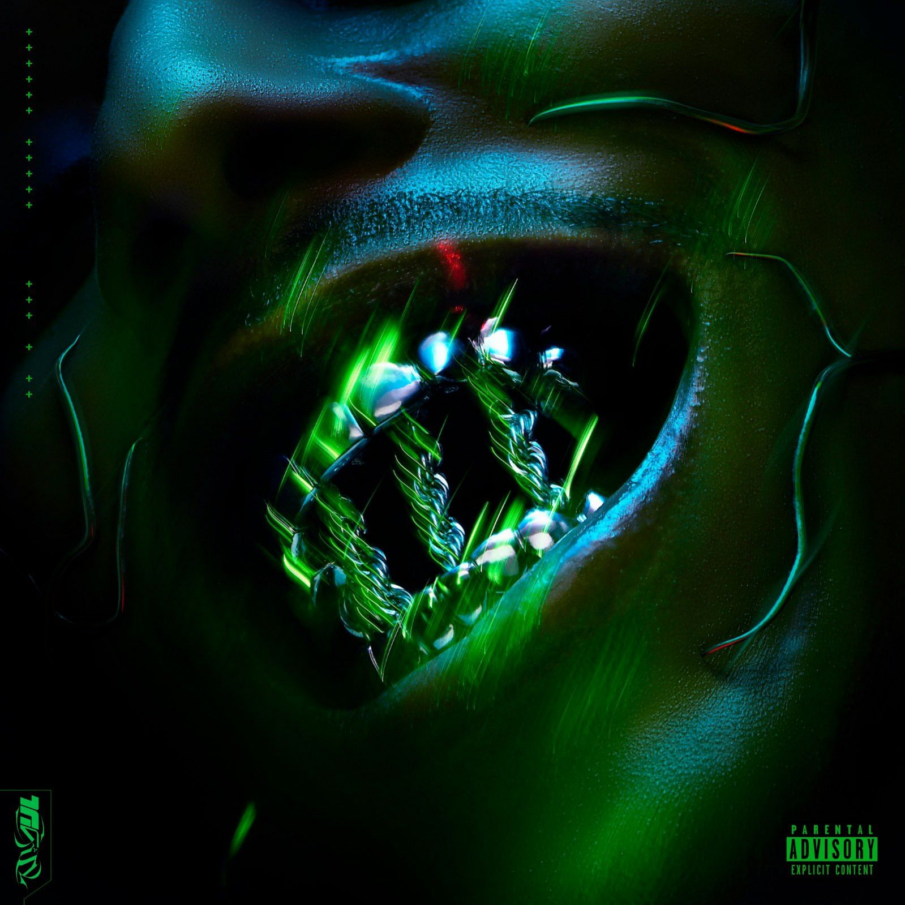
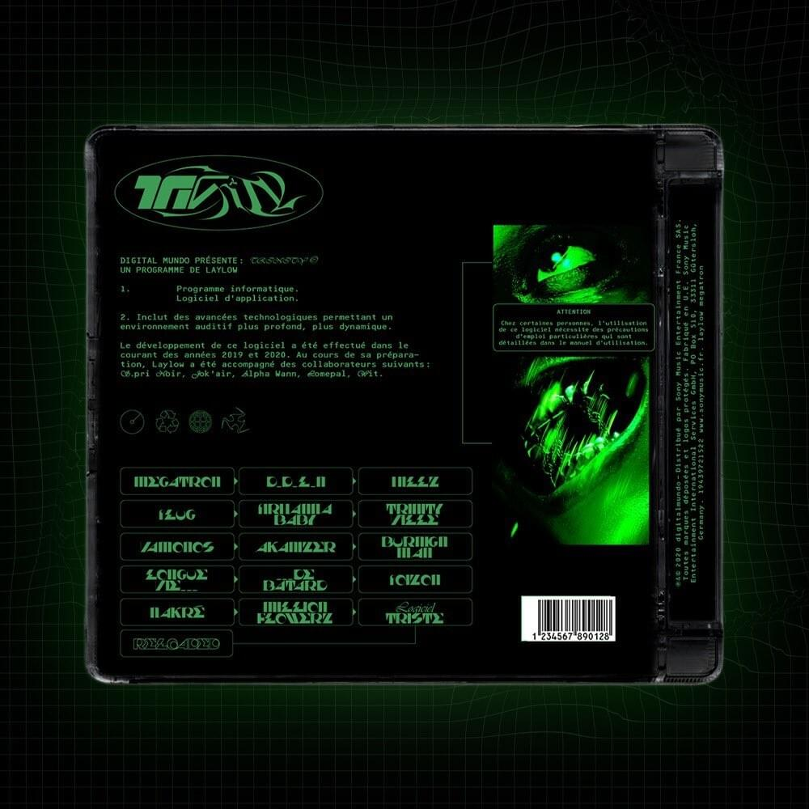
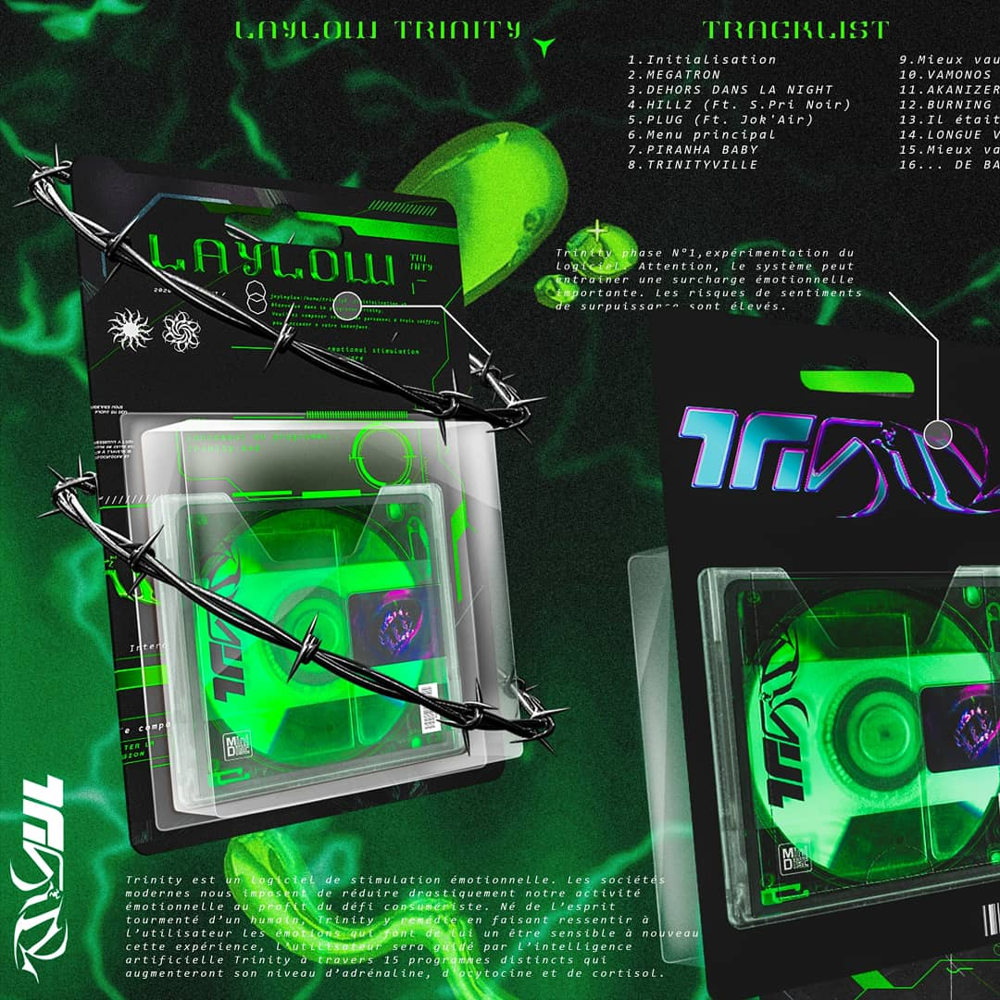

trinity
- 
- 

- 
Laylow is a French rapper originating from Toulouse, of his real name Jeremy Larroux.[1] In 2018, Laylow released the EP's .RAW and RAW-Z. On his first album Trinity that came out on the 28 February 2020, inviting Lomepal, S.Pri Noir, Jok'Air, Wit. and Alpha Wann for collaborations.[2] The album reached number 3 in the French Albums Charts of the week.
Laylow was born in 1993 in Toulouse a city in the south of France. He lived there until the age of nine, when he left for Tunisia with his father briefly, before joining his mother in Abidjan, Ivory Coast. Then he spent his time in the city of Mirande in the Gers in boarding school, where he met his future manager, and ended up settling in Toulouse. It was at this age that he began the rap through his big brother who introduced him to this art. He was influenced by American artists such as Ja Rule or G-Unit, the bling-bling side of rappers impressing him from his childhood, with French rap coming to him a little later.
Beginnings He began his career with Toulouse's artist Sir'Klo to form the duo Laylow x Sir'Klo. After a first song called "Attrape nous si tu peux" featuring Wit. Published in 2011, they released their first joint project two years later, "Roulette Russe", as a presentation. Influenced by American rap and especially West Coast rap, this project allowed them to be known little by little in French rap. Signed with Barclay, the Toulouse residents released the same year a new free project. It was also in 2011 that he made a stint in the Rap Contenders Sud. Laylow joined Montpellier's Wit. for a joint EP, Digital Night, released in November 2015. An 8 track EP accompanied with eight clips with TBMA, the beginning of long collaborations, both with the rapper and the production team. First solo EP's After several titles and clips published in 2016, he launched his solo career more concretely with Mercy, an EP of ten titles released in December 2016 where he invited various artists featuring including Wit again on two tracks, and armed himself again with the TBMA team, becoming the manufacturing brand of his so-called "futuristic" clips. His second project released on July 5, 2017, Digitalova, again contained ten titles and new artist collaborations, with Jok'Air and his sidekick Sir'Klo always accompanied by TBMA for the visuals. His third solo project of ten titles, .RAW was released on 19 June 2018 and hosted a unique featuring with Wit.. The fourth project soon followed on 7 December of the same year: a ten-track EP entitled .RAW -Z and announced only three days before its release, which proved most successful, sincere of his projects followed with a tour in 2019. Debut album: Trinity After four EPs, Laylow abandoned the format in favor of his first studio album Trinity, released on February 28, 2020. Three titles were pre-released: "Megatron", "TrinityVille" and "Poizon" before release of album, an ambitious opus of 22 tracks with multiple emotions which follows a singular storytelling in French rap, in which the artist finds himself faced with the use of an emotional stimulation software: Trinity. A critical and commercial success for an artist of his stature which allowed him to once again cross a milestone in his career and his identification in French rap